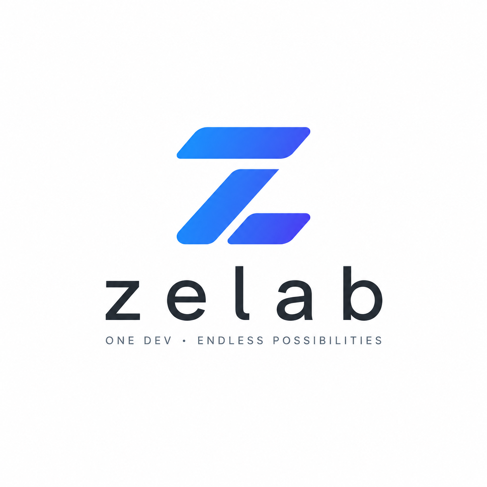

🍅

番茄看板
登录
☀️
🌙
待办
0
进行中
0
已完成
0
待办
☰
⊞
0
+ 添加任务
进行中
0
+ 添加任务
已完成
0
+ 添加任务
添加任务
待办
进行中
已完成
任务标题
*
任务描述
四象限分类
重要且紧急
重要不紧急
不重要但紧急
不重要不紧急
取消
删除
保存
确认删除
确定要删除此任务吗？此操作不可撤销。
取消
确认删除
🍅
登录
用户名
密码
取消
登录
没有账号？去注册
导入本地数据
检测到浏览器中有
0
个本地任务，是否导入到账号中？
跳过
导入
登出